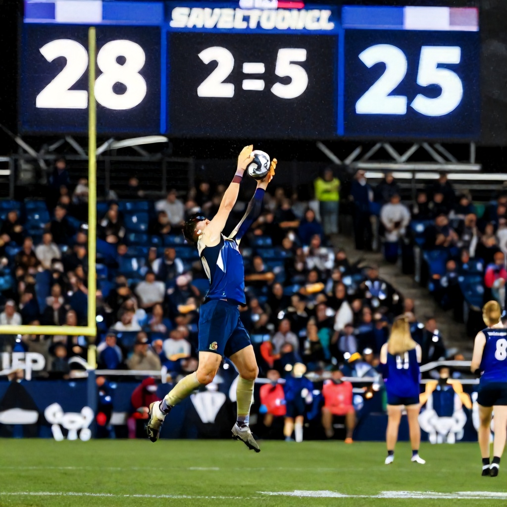

The Winnipeg Blue Bombers delivered a thrilling 28-25 overtime victory over the Hamilton Tiger-Cats in a game that lived up to its billing as a classic CFL showdown. The contest, which featured a back-and-forth battle throughout regulation and an extra period that saw both teams trade field goals, ended with a dramatic 30-yard field goal by Winnipeg's kicker in the second overtime period.
A Battle of Attrition
From the opening kickoff, the game was a defensive slugfest. Hamilton's offense struggled to find consistent rhythm early, with quarterback Jonathon Williams throwing two interceptions in the first quarter alone. Winnipeg's defense, led by linebacker Kyle Pehrson, capitalized on these mistakes, forcing three turnovers in the opening half.
Despite the early pressure, Hamilton managed to score a touchdown on their second drive of the game, capitalizing on a 30-yard pass from Williams to wide receiver Marcell Ateman. The Tiger-Cats' offensive line held strong, allowing Williams to operate comfortably through the first three quarters.
Turning Point in the Fourth Quarter
With the score tied 18-18 entering the fourth quarter, both teams traded field goals. However, it was a crucial fumble by Hamilton's running back Darius Bradwell in the red zone that shifted momentum. Winnipeg's defense recovered the loose ball and drove down the field for a field goal, taking a 21-18 lead with just under six minutes remaining.
Hamilton responded with a touchdown pass from Williams to tight end Chris Rymaszewski, tying the game at 25-25 with two minutes left. But the Blue Bombers' defense stood firm on the two-point conversion attempt, keeping the score tied and sending the game into overtime.
Overtime Drama
In the first overtime period, both teams had chances to win the game. Hamilton's offense drove deep into Winnipeg territory but settled for a field goal, making it 25-22. Winnipeg's offense then had a golden opportunity but failed to convert on a fourth-down play from the 10-yard line.
The second overtime period saw Winnipeg's offense take control. They marched down the field and converted a crucial field goal, giving them a 28-25 lead. Hamilton's final drive ended in a turnover on downs, sealing the victory for the Blue Bombers.
Betting Implications
The game was a major upset considering the pre-game odds, which gave Hamilton a 170% chance to win. The moneyline was set at Winnipeg -105 and Hamilton +170, while the spread was set at Winnipeg -3 and Hamilton +3. The over/under for the game was 51.5 points.
The Blue Bombers' win marked a significant turnaround for a team that had lost four of their last five games. This victory moves Winnipeg into a position to secure a playoff spot, while Hamilton's loss drops them further in the standings.
Looking Ahead
With the win, Winnipeg has now won three of their last five games and sits just outside the playoff picture. Their defense has been particularly impressive, allowing fewer than 20 points per game in their last four contests.
Hamilton, on the other hand, continues to struggle with consistency. Despite having a capable offense, they have been unable to capitalize on opportunities, leading to several close losses in recent weeks. The team will need to address their offensive execution if they hope to make a playoff push.
The next matchup for both teams will be against their respective division rivals, setting up another critical week of CFL action.